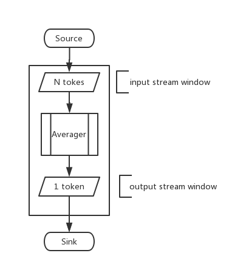

COStream编程语言是一种面向并行体系结构的高性能流编程语言，由华中科技大学数字媒体处理与检索实验室多核计算与流编译组设计与开发。语言的名称由3个关键字：composite、operator和stream组合而来。COStream程序采用数据流图的方式来描述应用的处理过程，图中节点表示计算，边表示数据的流动。COStream语言具有广泛的应用领域，当前主要用于面向大数据量处理应用，如媒体处理、信号处理、搜索应用、数据文件处理等。
下面这段代码给出了一个用COStream编写的一个程序实例。
composite Main(){
int N = 10;
stream<int x>S,P;
S = Source(){
int x;
init {x = 0;}
work {
S[0].x = x;
x++;
}
window{
S tumbling(1);
}
};
P = MyOp(S)(N);
Sink(P){
work{
int r;
r = P[0].x;
println(r);
}
window{
P tumbling(1);
}
};
}
composite MyOp(output Out,input In){
param
int pn;
Out = Averager(In){
work{
int sum = 0;
int i;
for(i=0;i<pn;i++)
sum += In[i].x;
Out[0].x = sum/pn;
}
window{
In sliding(pn,1);
Out tumbling(1);
}
};
}
程序的功能为求移动平均值，该程序由三个operator组成即Source，Averager和Sink。其功能如下：Source作为数据源产生由“0”开始的自然数序列输出给Averager；Averager将得到的前N个自然数求平均值并消耗掉最早得到的一个数据，把计算得到的平均值输出给Sink；Sink将得到的平均值打印到屏幕。下面给出了该程序对应的SDF图： 
流程序，即有序处理数据序列的程序，最常出现在声音、视频、数字信号处理的上下文中。流程序非常适合多核系统结构。对流应用的兴趣催生了一系列的作用于流域的程序语言，如COStream, Cg, StreamIt等。
COStream编程语言是一种面向并行体系结构的高性能流编程语言，采用同步数据流图的计算模式，即程序实现了一些独立的结点(为独立计算单元，COStream中称为actor)，这些结点通过输入和输出通道进行数据传递(即actor的输出边和输出边)，这些节点一起组成了代表整体运算的流图。
关于COStream语言的定义、编程规范和编译器行为（包括静态和动态）的详细说明等，详见《COStream流语言编程指南》。
COStream是高级的与体系结构无关的语言，其计算模式为同步数据流模式（Synchronous Data Flow, SDF），如图2.1，即： 1) 程序是由一系列独立的actor组成。 2) Actor的输入和输出速率是已知的。 3) 编译器负责调度和的管理缓冲区(即actor的输入和输出缓冲区)。 COStream语言的主要目的是： 1) 在多核架构下揭露并利用流程序固有的并行性 2) 自动实现特定域中流应用专家进行的优化 3) 提高程序员在流域中的工作效率 COStream如何实现程序的并行 COStream程序在编译器中将进行如下处理，以达到并行： 1) 任务划分 给数据流图（如图2.2）中的各结点分配处理器核（核的总个数由程序员确定），一个结点对应一个核，一个核可对应多结点，使各核的计算量大致相同，总通信开销尽量小。 2) 阶段赋值 给数据流图中各结点分配阶段号（总的阶段号由编译器决定），使每一阶段的总工作量大致相同，前一阶段的结点所需数据不依赖后一阶段中结点的输出。如图2,2中，结点AtoD的阶段号应不大于结点FMDemod的阶段号。 3) 软件流水 采用软件流水技术，实现并行。其中，软件流水中第X阶段执行上述阶段号为X的结点。